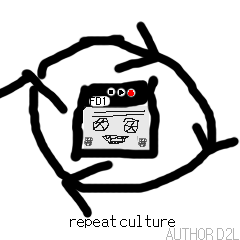

你有没有觉得在你的地区寻找复读机很难？ 你有没有希望能在线立刻随时寻找一个复读机？ 现在你能了！ 有了复读文化，你一键就可以跟一个从你的地区来的性感，本地的复读机交谈！ 如果你要嵌入复读文化到你的网站, 只需要下面那一点点 HTML 代码： <iframe src="https://dobby233liu.github.io/Repeat/embed.html" width="320" height="430" style="position:fixed;bottom:0px;right:10px;z-index:100;border:0"></iframe>